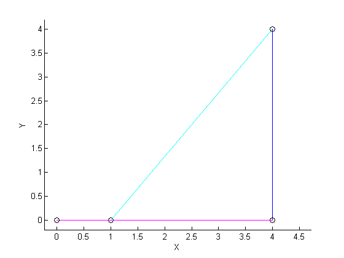

Linkage Solver Examples
Contents
Five bar linkage
% Consider this simple five bar linkage with shown unknowns. % O % / \ ?* % / \ % (5) / \ (?) % / \ % / 53.87* \ % O O % | | % | | %(6) | | (6) % | | % | 90* 90* | % O - - - - - O % (6) %Working clockwise:
[unknown1,unknown2]=link_solver(6,90,5,53.1301,[],[],6,270,6,180) % Linkage 1 is of length 5 and is at 90 degrees. % Linkage 2 is unknown. % Linkage 3 is of length 5 and at 270 degrees. % Linkage 4 is of length 5 and at 180 degrees. % Alternative ways to call link_solver that will get the correct solution:
unknown1 =
5.0000
unknown2 =
306.8699
[length3, angle3]=link_solver(6,90,5,53.1301,[],[],6,270,-6,0,[5,-50])
length3 =
5.0000
angle3 =
306.8699
links=link_solver(6,90,5,53.1301,'',[],6,-90,6,180)
links =
length_1: 6
angle_1: 90
length_2: 5
angle_2: 53.1301
length_3: 5.0000
angle_3: 306.8699
length_4: 6
angle_4: 270
length_5: 6
angle_5: 180
[link1, link2, link3, link4, link5]=link_solver(6,90,-5,233.1301,{},[],6,270,6,180)
link1 =
6 90
link2 =
5.0000 53.1301
link3 =
5.0000 306.8699
link4 =
6 270
link5 =
6 180
Five bar - Plotting Example
[links]=link_solver(6,90,5,53.1301,[],[],6,270,6,180); draw_bar(links);
Four bar linkage
% (?) % O - - - - - O % | ? 90* | % | | %(5) | | (5) % | | % | 90* 90* | % O - - - - - O % (5) % Linkage 1 is of length 5 and is at 90 degrees. % Linkage 2 is unknown. % Linkage 3 is of length 5 and at 270 degrees. % Linkage 4 is of length 5 and at 180 degrees.
[link3, angle3]=fourbar(5,90,[],[],5,270,5,180)
link3 =
5.0000
angle3 =
360
[link3, angle3]=fourbar(5,90,[],[],5,270,5,180)
link3 =
5.0000
angle3 =
360
[link1, link2, link3, link4]=fourbar(-5,270,[],[],5,270,5,180)
link1 =
5 90
link2 =
5 360
link3 =
5 270
link4 =
5 180
links=fourbar(-5,270,[],[],5,270,5,180)
links =
length_1: 5
angle_1: 90
length_2: 5
angle_2: 360
length_3: 5
angle_3: 270
length_4: 5
angle_4: 180
Plotting example.
link_solver(1,45,1,0,[],[],1,180) draw_bar(ans);
ans =
length_1: 1
angle_1: 45
length_2: 1
angle_2: 0
length_3: 1
angle_3: 225
length_4: 1
angle_4: 180
Four bar linkage - Multiple input
links=link_solver(1,[0 45 90],5,[],4,[],4,180,[45,270]); % Legend on draw_bar(links) % Legend off draw_bar(links,'off');
Guessing vs No Guesses - four bar linkage
Supplying a guess for the unknown variables is not manditory, however it is suggested as certain input configurations the solver will correctly solve for the unknowns, although the linkage may not look as expected.
No guesses
link1=link_solver(1,-10,5,[],4,[],4,180),figure(1);draw_bar(link); link2=link_solver(1,-15,5,[],4,[],4,180),figure(2);draw_bar(link);
link1 =
length_1: 1
angle_1: 350
length_2: 5
angle_2: 56.4252
length_3: 4
angle_3: 273.5843
length_4: 4
angle_4: 180
link2 =
length_1: 1
angle_1: 345
length_2: 5
angle_2: 311.7504
length_3: 4
angle_3: 94.2346
length_4: 4
angle_4: 180
Guesses
link1=link_solver(1,-10,5,[],4,[],4,180),figure(1);draw_bar(link) link2=link_solver(1,-15,5,[],4,[],4,180,[link.angle_2 link.angle_3]),figure(2);draw_bar(link)
link1 =
length_1: 1
angle_1: 350
length_2: 5
angle_2: 56.4252
length_3: 4
angle_3: 273.5843
length_4: 4
angle_4: 180
link2 =
length_1: 1
angle_1: 345
length_2: 5
angle_2: 58.0011
length_3: 4
angle_3: 275.5169
length_4: 4
angle_4: 180
Guesses for multiple linkage orientations
l=link_solver(1,-15,5,[],4,[],4,180,[45,-90;-45,90]);draw_bar(l)
Three bar linkages
Equilateral Triangle
[link3, angle3]=link_solver(1,60,[],[],1,180); draw_bar(1,60,link3,angle3,1,180);
Isosceles Triangle
[link1, link2, link3]=link_solver(1,rand(1,1)*60,1,[],[],180); draw_bar(link1(1),link1(2),link2(1),link2(2),link3(1),link3(2));
Scalene Triangle
[links]=link_solver(5,0,3,45,[],[]); draw_bar(links);